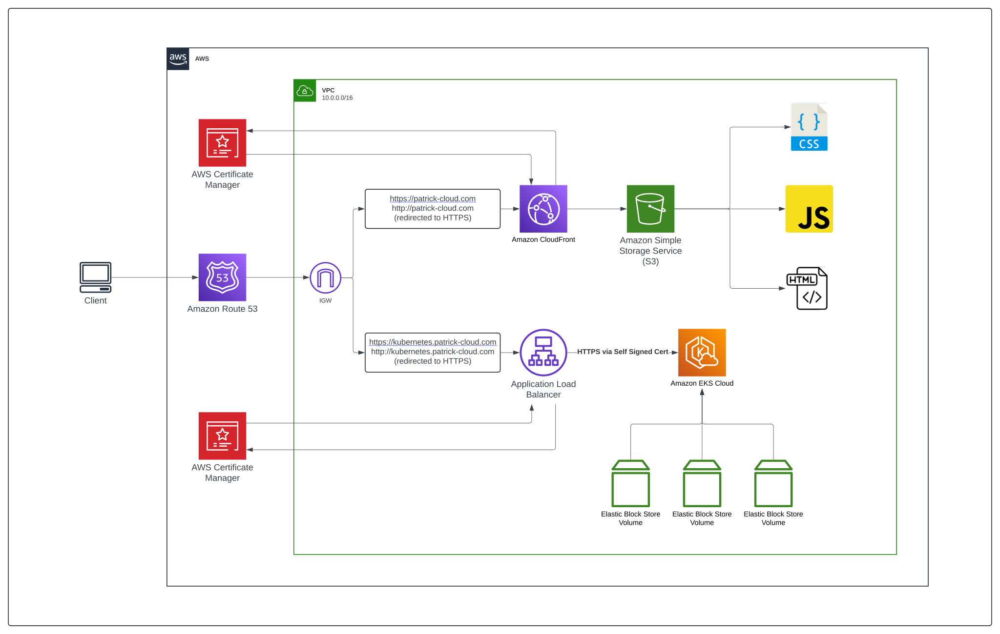

Static Hosting
S3 for storage, CloudFront for TLS and edge caching — and the reasoning behind both.

S3 bucket — a cheap and simple spot to store HTML, CSS, and JavaScript.
CloudFront lets me secure the site with AWS Certificate Manager.
CloudFront caches content at edge locations around the world, reducing latency and improving load times.
Originally built on the Massively template from HTML5 UP; now a custom three-theme system, one per section of the site.